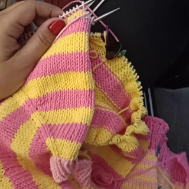
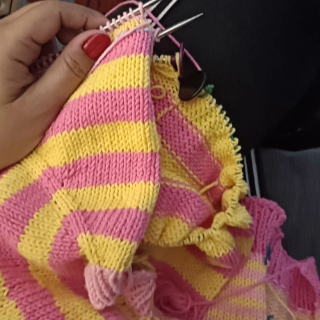

It was 2012, the weather was starting to get colder and I decided to knitting again, since every winter I did it, but never finished anything.
But this time it was different, suddenly, I realized that knitting became a passion, it turned into something I wanted to do forever
I knew the basics of the basics, what purl stitch and knit stitch were.
I then started researching everything about knitting on the internet, and with that I started discovering new techniques, new stitches, and I fell more and more in love with the craft.
I created the brand damanu to show my work. My pieces are handmade, one by one, in an exclusive way.
Little by little I weave the threads and colors, creating pieces and being happy!
 
